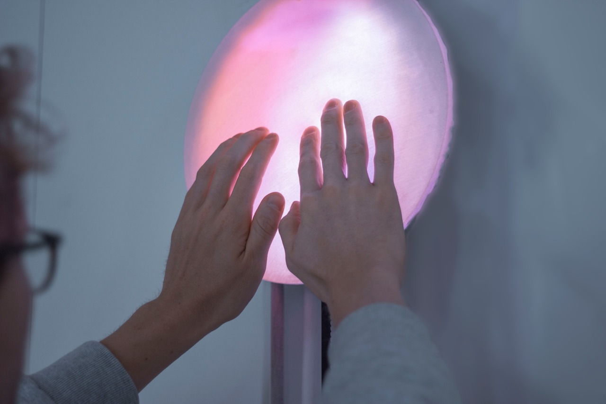
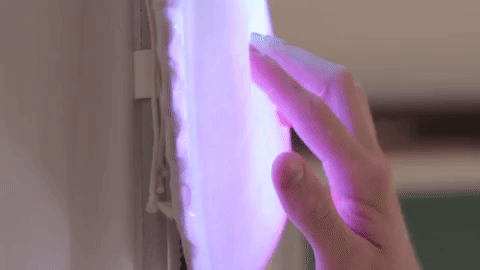
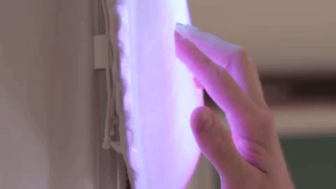
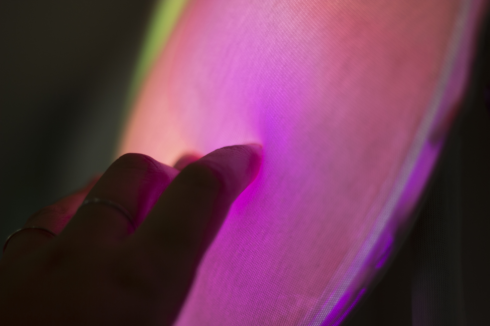
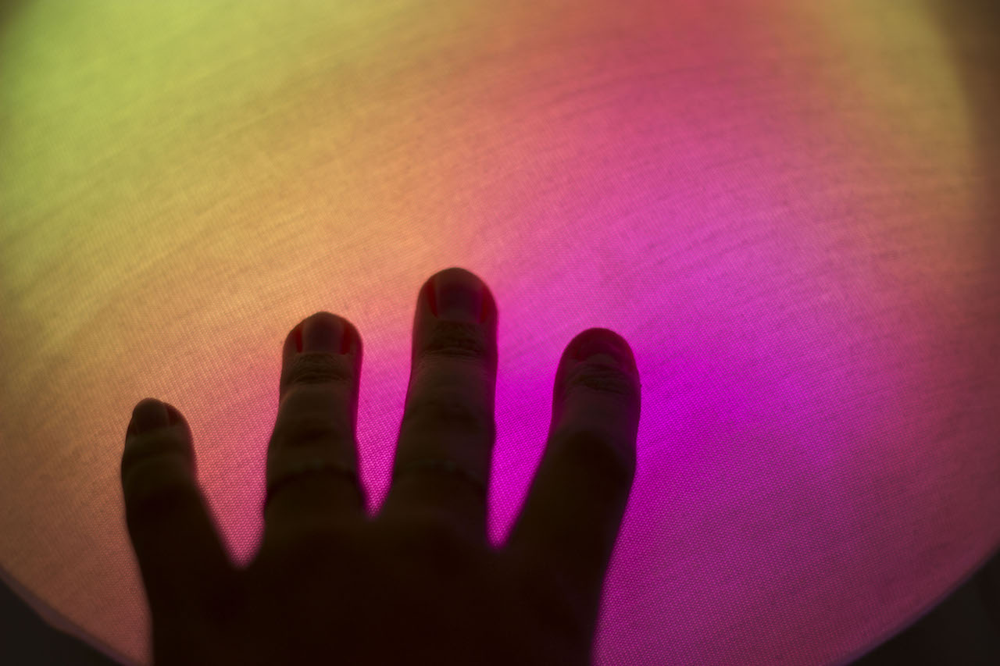
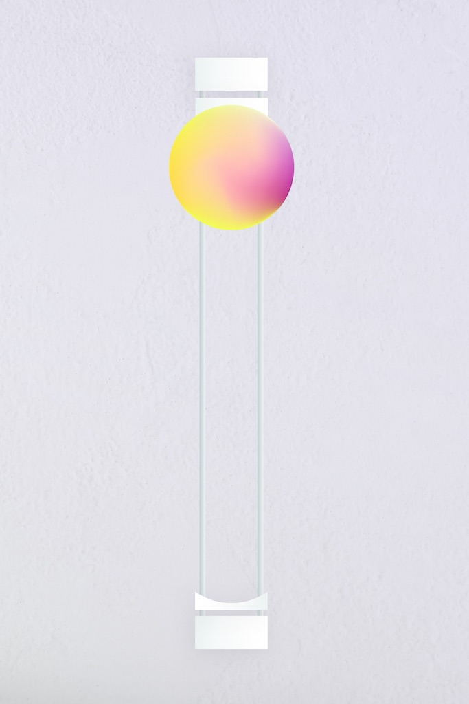
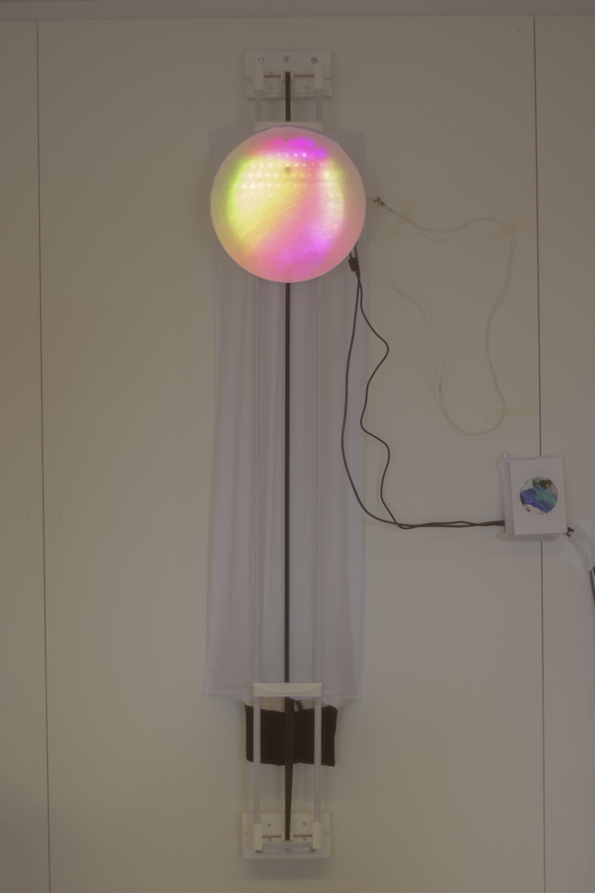
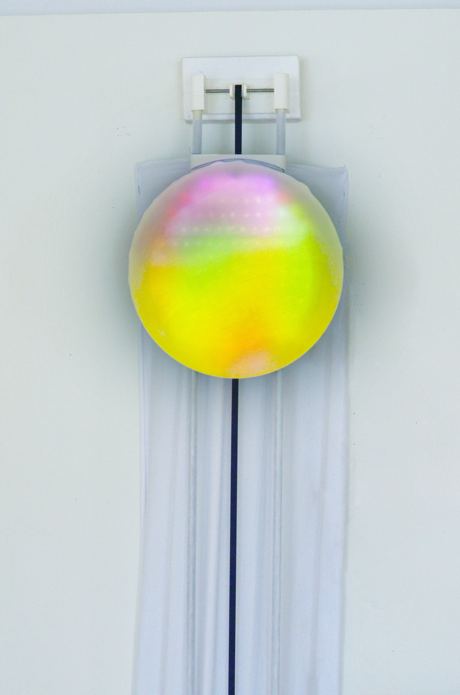

SOMAESTHETIC DESIGN for ELECTROLUX
A ritual for activities and chores related to home appliances
 

A project by Andreas Almqvist and Nadia Campo Woytuk
This project is an interaction design meant to support the starting of an activity in your home that you know should be done, but you don’t get around to do it. Perhaps you're feeling low, lazy, out of energy, or overwhelmed to start the activity or chore (it's a very relatable feeling). These activities could be for instance carrying out a chore, cooking, developing your artistic hobby, or something else that you for some reason procrastinate.
 Approaching this lamp, you start by bringing it down slowly to the center of yourself, feeling the interestingly mouldable qualities of the disc. As your hand palms comfortably sinks into it, you push and slide it with your palms, maybe down again and up in a movement that is akin to charging energy and focus. You reach the top in a yoga-like salutation, at which point you are fully stretched (adjustable to your height). The lamp ignites, marking the fulfillment of the ritual.
 Our intention is that your inwards attention is, at this point, slowly turned outwards, and you feel more present and determined to address the activity that you had in mind. The interaction is akin to a ritual in many aspects, where meaning is created in the process of the activity. Also, rituals may have to be taught to be understood and to experience the intended meaning of them. In our case, particular meanings may be appropriated depending on the context.
Publication: soon to be released.